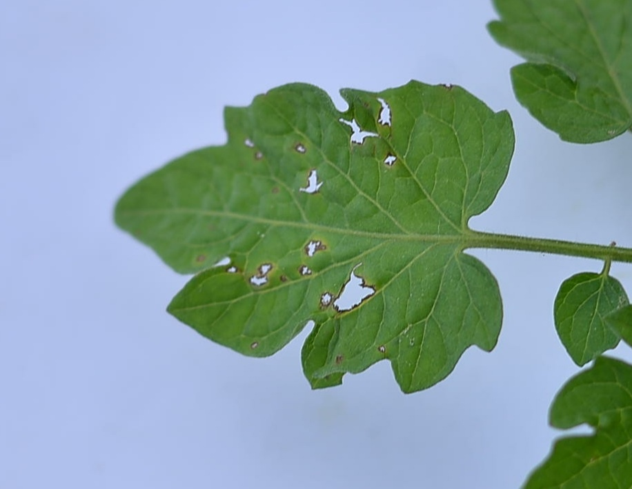

Precision crop health diagnostics in seconds. Combines 4-angle multi-spectral photo analysis, field acreage metrics, and generative AI agronomic advisories translated into native farmer dialects.

Install 16 Delta pheromone traps/acre immediately. Spray Chlorantraniliprole 18.5% SC @ 0.3ml/L water to prevent fruit boring.
Provide your Gemini API Key for hyper-customized agronomic advice, or use the 100% offline rule-calibrated engine.
Upload plant photos or choose verified field presets. Enter your farm acreage, crop age, and language to receive calibrated chemical dosages and cultural schedules.
Supports JPG, PNG, WEBP (Leaf, Branch, or Canopy)
Phthorimaea absoluta • Blotch & Mine Infestation
• Install 16 Delta pheromone traps/acre with Tuta lure (replace every 4 weeks). • Spray NeemAzal 1% (Azadirachtin 10,000 ppm) @ 2.5 ml/L water on leaf undersides. • Release Trichogramma achaeae parasitoids @ 100,000/acre.
• Chlorantraniliprole 18.5% SC @ 0.3 ml/L (60 ml in 200L water per acre). • Alternate with Spinetoram 11.7% SC @ 0.9 ml/L after 10 days to break resistance. • Pre-Harvest Interval (PHI): 3 days. Wear protective masks.
• Prune and deeply bury or burn lower infested leaves touching soil. • Maintain consistent drip moisture; avoid high soil nitrogen that promotes soft succulent growth favored by larvae.
Single-leaf photos miss 68% of early pinworm entries. AgroNex mandates a 4-perspective inspection sequence matching how professional agricultural inspectors scout fields.
Identifies transparent blister patches created by Tuta larvae feeding between epidermis layers, versus pale winding trails from Liriomyza.
Detects cream-colored cylindrical eggs (0.35mm) laid along veins, plus black frass deposits that confirm active larval metabolism.
Critical distinction: Tuta absoluta bores directly into terminal buds, petioles, and young green fruit calyxes, causing structural collapse.
Evaluates overall canopy vigor and calculates whether leaf area loss exceeds economic thresholds (ETL) before committing to chemical sprays.
Farmers frequently misidentify Tuta absoluta for serpentine leafminers and apply the wrong pesticide, wasting money while larvae bore into fruit.
| Agronomic Parameter | Tuta absoluta (Pinworm) | Liriomyza (Leafminer) | Healthy Tomato Plant |
|---|---|---|---|
| Damage Symptom | Large irregular transparent blotch mines containing dark frass beads | Narrow, winding serpentine white tunnels in leaf mesophyll | Clean green foliage, zero mines or frass |
| Fruit Damage | Severe: Bores pinholes into green & ripe tomatoes | None: Restricted exclusively to foliage | Healthy spotless tomato fruit development |
| Pheromone / Trap | Delta Pheromone Traps (16/acre) with Tutasan lure | Yellow Sticky Traps (12-15/acre) at canopy level | 4-5 sentinel yellow sticky traps for monitoring |
| Primary Chemical | Chlorantraniliprole 18.5% SC @ 0.3ml/L water | Cyromazine 75% WP @ 0.5g/L water | No chemicals needed (preventive Neem oil 2%) |
| Economic Threshold (ETL) | 1-2 larvae/plant or 3-4 moths/trap/week | 5-8 active mines per plant in vegetative stage | Zero pest pressure |
Over-spraying causes chemical pesticide resistance, while under-spraying fails to kill larvae. Select your land size to immediately calculate water barrels, chemical doses, and trap requirements.
Designed specifically for smallholder tomato farmers. Large touch targets (>52dp), high-contrast sunlight readability, labels with ≤3 words, and crystal-clear voice assistance in Kannada, Hindi, Telugu, and English.
AgroNex is packaged with Expo and PyTorch MobileNetV2. Connect any Android smartphone via USB or run the wireless server daemon on your local network.
npm run android
python3 backend/server.py
Version 1.0.0 • Standalone Mobile Release
Powers Tailored Generative AI Crop Advisories
Your key unlocks real-time generative agronomic insights considering acreage, cultivar, and pest stage. If left empty, AgroNex automatically falls back to the built-in 100% offline Expert Agronomic Neural Engine.
Stored securely in your local browser storage (localStorage).